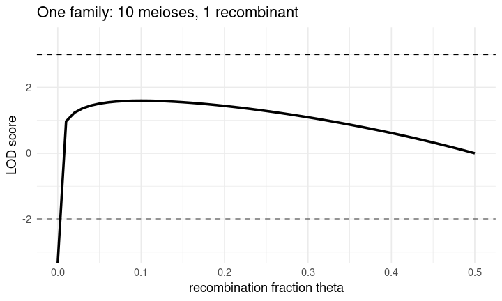
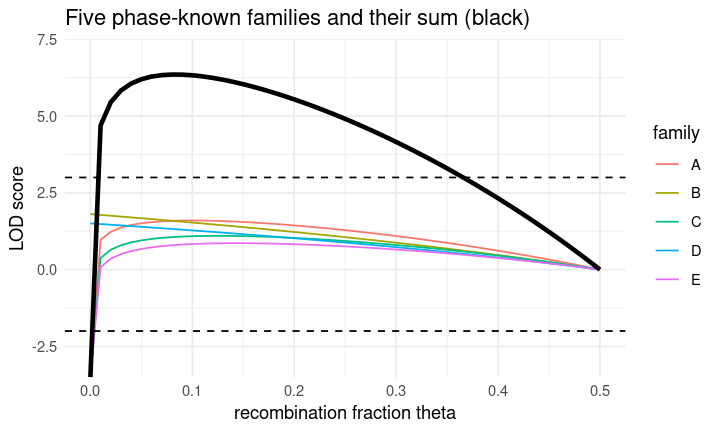

Exercise in R: human linkage & LOD scores
Goal
By the end of this exercise you should be able to:
- write a function
lod(theta, n, k)for a phase-known family, and check it against your hand calculations; - evaluate a function over a grid of parameter values with
map_dbl()to draw a LOD curve; - add LOD curves across families in a table, and find θ̂ both on the grid (
which.max) and exactly (optimize()); - extend the function to a phase-unknown family, and use it to ask how many meioses are needed for LOD 3.
Before you start
This page builds on the by-hand part of the Exercise, so do that first. You need the packages dplyr, ggplot2, purrr, readr and tidyr. Download hd_families.csv and save it in a data/ folder of your R project. The families in it are invented teaching data.
library(dplyr)
library(ggplot2)
library(purrr)
library(readr)
library(tidyr)Tasks
You already know how to write functions with arguments (Mendel, Linkage & recombination) and how to apply a function to a list with map_dbl() (Extensions to Mendel). This unit’s new idiom is to evaluate a function over a grid of parameter values, here θ = 0, 0.01, …, 0.5, to get a curve, and then to find the maximum of that curve, first by looking it up on the grid with which.max(), then exactly with optimize(). optimize(f, interval, maximum = TRUE) searches an interval for the value of x where the one-argument function f(x) is largest, and returns it as $maximum together with the function value $objective.
R1. (the LOD function) Write lod(theta, n, k) for a phase-known family with n informative meioses and k recombinants. Check it against your answers: the family of fig. 1 in the lecture (n = 6, k = 1) at θ = 0.1 gave 0.58, and your B2 family (n = 8, k = 2) gave 0.45 at θ = 0.25. What do you get at θ = 0.5? At θ = 0, with and without recombinants?
lod <- function(theta, n, k) {
L_theta <- theta^k * (1 - theta)^(n - k) # likelihood if linked at theta
L_half <- 0.5^n # likelihood if unlinked
log10(L_theta / L_half)
}
lod(0.1, n = 10, k = 1)
lod(0.5, n = 10, k = 1)
lod(0, n = 10, k = 1)
lod(0, n = 10, k = 0)Add your own calls for n = 6, k = 1 and n = 8, k = 2.
R2. (a LOD curve with map_dbl) Make a grid of θ values from 0 to 0.5 in steps of 0.01. Use map_dbl() to compute the LOD for one family (n = 10, k = 1) at every θ, put the result in a tibble, and plot the curve with the thresholds +3 and −2. Where is the maximum?
thetas <- seq(0, 0.5, by = 0.01)
curve1 <- tibble(theta = thetas,
lod = map_dbl(thetas, \(t) lod(t, n = 10, k = 1)))
curve1 |> filter(theta %in% c(0, 0.05, 0.1, 0.2, 0.3, 0.5))
curve1 |> slice_max(lod)
ggplot(curve1, aes(theta, lod)) +
geom_line(linewidth = 1) +
geom_hline(yintercept = c(3, -2), linetype = "dashed") +
coord_cartesian(ylim = c(-3, 3.5)) +
labs(x = "recombination fraction theta", y = "LOD score",
title = "One family: 10 meioses, 1 recombinant") +
theme_minimal()At θ = 0 the LOD is -Inf; ggplot draws that point at the bottom edge of the panel, which is why the curve drops straight down there.
R3. (adding families) Read data/hd_families.csv (the comment = "#" argument skips the description lines at the top). Keep the phase-known families. Because the arithmetic in lod() works element by element, it accepts whole columns: expand_grid() makes one row per family and θ, and mutate() computes all LODs at once. Then add the families at each θ with group_by(theta) and summarise(). Plot each family and the total.
fams <- read_csv("data/hd_families.csv", comment = "#", show_col_types = FALSE)
fams
known <- fams |> filter(phase == "known")
curves <- expand_grid(known, theta = thetas) |>
mutate(lod = lod(theta, n, k))
nrow(curves)
total <- curves |>
group_by(theta) |>
summarise(lod = sum(lod))
total |> filter(theta %in% c(0, 0.05, 0.1, 0.2, 0.3, 0.5))
ggplot(curves, aes(theta, lod)) +
geom_line(aes(colour = family)) +
geom_line(data = total, linewidth = 1.3) +
geom_hline(yintercept = c(3, -2), linetype = "dashed") +
coord_cartesian(ylim = c(-3, 7)) +
labs(x = "recombination fraction theta", y = "LOD score",
title = "Five phase-known families and their sum (black)") +
theme_minimal()Why is nrow(curves) 255? Does any single family reach 3? Does the total?
R4. (finding θ̂) Find the maximum of the total on the grid with slice_max() and with which.max(). Then write a function total_lod(theta) of θ alone and maximise it exactly with optimize(). Compare θ̂ with total recombinants / total meioses.
total |> slice_max(lod)
total$theta[which.max(total$lod)]
total_lod <- function(theta) sum(lod(theta, known$n, known$k))
best <- optimize(total_lod, interval = c(0, 0.5), maximum = TRUE)
best
sum(known$k) / sum(known$n)Why does the grid give 0.08 and not the exact value?
R5. (phase unknown) Family F in the file has an unknown phase. Write lod_unknown(theta, n, k), which averages the likelihood over both phases. Compare the known and unknown versions for n = 6, k = 1 at θ = 0.1 and at their maxima. Then add family F to the five others and find the new θ̂ and maximum LOD.
lod_unknown <- function(theta, n, k) {
L_theta <- 0.5 * (theta^k * (1 - theta)^(n - k) + theta^(n - k) * (1 - theta)^k)
log10(L_theta / 0.5^n)
}
c(known = lod(0.1, 6, 1), unknown = lod_unknown(0.1, 6, 1))
optimize(\(t) lod(t, 6, 1), c(0, 0.5), maximum = TRUE)$objective
optimize(\(t) lod_unknown(t, 6, 1), c(0, 0.5), maximum = TRUE)$objective
all_lod <- function(theta) total_lod(theta) + lod_unknown(theta, 6, 1)
optimize(all_lod, c(0, 0.5), maximum = TRUE)R6. (how many meioses?) Use map_dbl() over the family size n this time. (a) For a phase-known family with no recombinants, compute LOD(0) for n = 1, …, 15. Which is the smallest n with LOD ≥ 3? (b) With exactly one recombinant, the maximum is at θ̂ = 1/n. What is the smallest n that reaches 3? (c) And with two recombinants?
ns <- 1:15
tibble(n = ns, lod_at_0 = map_dbl(ns, \(n) lod(0, n, 0))) |> filter(n >= 8)
tibble(n = 10:30, max_lod = map_dbl(10:30, \(n) lod(1 / n, n, 1))) |>
filter(max_lod >= 3) |> head(1)
tibble(n = 10:40, max_lod = map_dbl(10:40, \(n) lod(2 / n, n, 2))) |>
filter(max_lod >= 3) |> head(1)Solutions
All output below is from Rscript --vanilla run in the unit folder.
R1.
[1] 1.598483
[1] 0
[1] -Inf
[1] 3.0103At θ = 0.5 the LOD is always 0 (numerator = denominator). At θ = 0 with a recombinant, L(0) = 0 and the LOD is −∞; with no recombinants, LOD(0) = 10 × log10 2 = 3.01. lod(0.1, 6, 1) gives 0.577 and lod(0.25, 8, 2) gives 0.454, matching the hand calculations.
R2.
# A tibble: 6 × 2
theta lod
<dbl> <dbl>
1 0 -Inf
2 0.05 1.51
3 0.1 1.60
4 0.2 1.44
5 0.3 1.09
6 0.5 0
# A tibble: 1 × 2
theta lod
<dbl> <dbl>
1 0.1 1.60
The maximum is 1.60 at θ = 0.1 = k/n. Far below 3: one family of ten is not enough.
R3.
# A tibble: 6 × 4
family n k phase
<chr> <dbl> <dbl> <chr>
1 A 10 1 known
2 B 6 0 known
3 C 8 1 known
4 D 5 0 known
5 E 7 1 known
6 F 6 1 unknown
[1] 255
# A tibble: 6 × 2
theta lod
<dbl> <dbl>
1 0 -Inf
2 0.05 6.20
3 0.1 6.33
4 0.2 5.54
5 0.3 4.16
6 0.5 0
curves has 5 families × 51 θ values = 255 rows. No single family reaches 3 (the best, B with 6 non-recombinants, reaches 1.81 at θ = 0), but the total passes 3 for every θ between about 0.003 and 0.37, with a maximum above 6.
R4.
# A tibble: 1 × 2
theta lod
<dbl> <dbl>
1 0.08 6.35
[1] 0.08
$maximum
[1] 0.08332633
$objective
[1] 6.352514
[1] 0.08333333On the grid, θ̂ = 0.08; optimize() gives 0.0833 with maximum LOD 6.35, which equals 3/36 (3 recombinants in 36 meioses). The grid can only return one of the values it contains (0.08 or 0.09), so it is only as precise as its step; optimize() searches between the grid points. Note that we had to add the families before maximising: the sum of the five separate maxima would be 6.9.
R5.
known unknown
0.5773925 0.2764287
[1] 0.6321225
[1] 0.3317978
$maximum
[1] 0.09524051
$objective
[1] 6.60583With the phase unknown the same family gives about half the LOD (max 0.33 instead of 0.63). Adding family F to the others raises the total maximum only from 6.35 to 6.61, and moves θ̂ to 0.095.
R6.
# A tibble: 8 × 2
n lod_at_0
<int> <dbl>
1 8 2.41
2 9 2.71
3 10 3.01
4 11 3.31
5 12 3.61
6 13 3.91
7 14 4.21
8 15 4.52
# A tibble: 1 × 2
n max_lod
<int> <dbl>
1 16 3.19
# A tibble: 1 × 2
n max_lod
<int> <dbl>
1 20 3.20- 10 non-recombinant meioses (3.01). (b) With one recombinant, 16 meioses (3.19). (c) With two, 20 meioses (3.20). Each recombinant costs about as much evidence as 5–6 extra meioses. In a real study, these meioses come from many families, which is why the LOD’s additivity matters.
Where this leads
The pattern of this page, a function of one parameter evaluated over a grid and then maximised, is maximum likelihood estimation, the workhorse of statistical genetics. You meet curves over a parameter again in Drift and selection (Part 7). In Complex traits (Part 7), GWAS replaces family LOD scores with association tests at hundreds of thousands of SNPs.